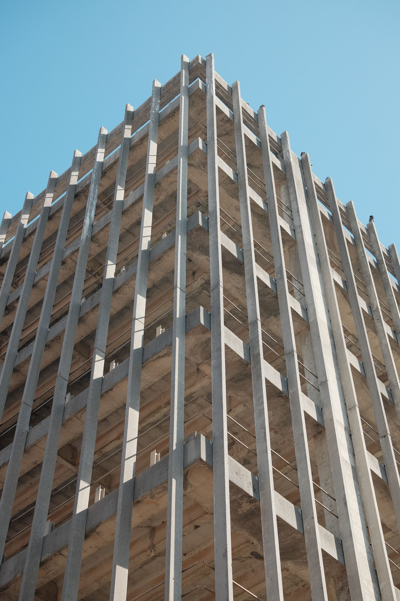

Every decision should have a clear source, owner, and next action.
Registered Civil Engineer · Bulacan, PH
Structure in the field.
Clarity in the system.
I bridge the technical and administrative sides of construction—coordinating people, drawings, records, and decisions from groundbreaking to turnover.

01 / About
A practical systems thinker.
I work where drawings meet decisions—turning complex project information into a clear, traceable path for the people delivering the work.
I am Lois Jairam B. Llamas, a registered civil engineer working in document control and project coordination. My role sits between the office and the field: I keep technical information current, surface inconsistencies early, and make sure commitments can be followed through.
My longer trajectory is project management. I am building that foundation through the unglamorous but essential disciplines that make projects reliable: records, coordination, quantity awareness, scheduling, and quality verification.
Good systems reduce ambiguity between designers, builders, and clients.
Tools succeed when they remain understandable under real site conditions.
02 / Selected work
Tools and deliverables.
Project work should be usable, accountable, and close to the field.
Primary project · Live system
QA/QC Punchlisting System
A purpose-built field workflow for recording punch items, attaching inspection and close-out evidence, assigning priorities, tracking verification, and producing project reports. Online team use and private offline review remain deliberately separate.
5Tracked workflow states
2Independent online / offline modes
1Traceable team record
Technical correspondence & document control
Structured RFIs, RFAs, submittals, drawing revisions, and technical replies designed for clear review and defensible project records.
View artifacts archiveConstruction project coordination
Coordination support across a dormitory development and industrial warehouse project, linking suppliers, site teams, schedules, and documentation.
Review project involvement03 / Experience
A growing field practice.
Building a project-management foundation through coordination, controls, and site reality.
2025 — Present
Document Controller Engineer
Total Safe Development Construction, Inc.
Managing construction documents, supplier coordination, delivery tracking, drawing reviews, and stakeholder communication across active building projects.
2025
Registered Civil Engineer
Professional Regulation Commission
Licensed in June 2025, supported by formal training in construction safety, quantity takeoff, and project scheduling.
2022
Civil Engineer Intern
DPWH — Bulacan 2nd District Engineering Office
Supported site investigations, surveying, AutoCAD land plotting, bidding documents, and construction-report archiving.
04 / Capabilities
The working toolkit.
Document control
RFIs, RFAs, submittals, transmittals, drawing revisions, and structured archives.
Project coordination
Stakeholder follow-through, supplier tracking, schedule awareness, and issue resolution.
QA/QC workflows
Inspection evidence, punchlists, verification status, close-out records, and reporting.
Quantity & estimating support
Measured quantity takeoffs, structured cost estimates, and material summaries prepared from project drawings using Planswift and Excel.
Technical review
Drawing comparison, inconsistency detection, technical communication, and escalation.
Digital systems
Practical tools that improve field capture, accessibility, traceability, and reporting.
Professional inquiries · Collaboration · Opportunities
Let’s make the next project easier to follow.
Also available for selected quantity takeoff and cost-estimating work.
Contact me